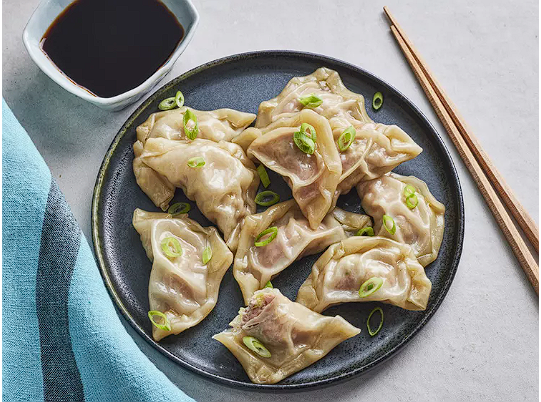

Pork Dumplings

Description
If you're looking for the best steamed pork dumplings recipe on the
internet, you've come to the right place. These pork dumplings are
as easy to assemble and steam as they are to eat.
Ingredients
- 100 (3.5 inch square) wonton wrappers
- 1 ¾ pounds ground pork
- 1 tablespoon minced fresh ginger root
- 4 cloves garlic, minced
Steps
- Stir until well mixed.
- Place 1 heaping teaspoon of pork filling onto each wonton skin.
- Arrange dumplings